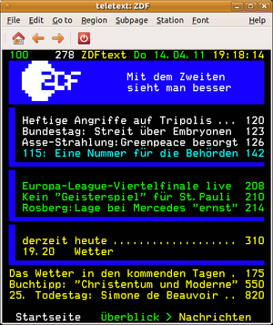

mtt
Dieser Artikel wurde für die folgenden Ubuntu-Versionen getestet:
Ubuntu 14.04 Trusty Tahr
Zum Verständnis dieses Artikels sind folgende Seiten hilfreich:
mtt ist ein Programm zum Anzeigen von Teletext basierend auf der ZVBI-Bibliothek  . Es wurde von Gerd Knorr entwickelt und ist Teil des xawtv-Projektes , wird aber bei der in den Paketquellen vorliegenden xawtv-Version nicht mitinstalliert. Es war Bestandteil von MoTV, das allerdings seit Intrepid nicht mehr in den Paketquellen vorliegt. mtt lässt sich mit jedem DVB-fähigen Medienplayer verwenden, dabei stört es die Programme nicht, da es passiv die eingehenden Teletext-Streams über /dev/dvb/adapter<x>/demux0 auswertet, ohne dabei in die TV-Wiedergabe einzugreifen.
. Es wurde von Gerd Knorr entwickelt und ist Teil des xawtv-Projektes , wird aber bei der in den Paketquellen vorliegenden xawtv-Version nicht mitinstalliert. Es war Bestandteil von MoTV, das allerdings seit Intrepid nicht mehr in den Paketquellen vorliegt. mtt lässt sich mit jedem DVB-fähigen Medienplayer verwenden, dabei stört es die Programme nicht, da es passiv die eingehenden Teletext-Streams über /dev/dvb/adapter<x>/demux0 auswertet, ohne dabei in die TV-Wiedergabe einzugreifen.
Installation¶
mtt ist nicht in den Ubuntu-Quellen vorhanden, es lässt sich aber über von mtron zur Verfügung gestellte Pakete (32- und 64-bit) installieren[1]
Von mtt werden folgende DEB-Pakete angeboten:

Die Pakete können für Ubuntu 14.04 heruntergeladen werden. Nachdem man sie für die korrekte Ubuntuversion und Architektur geladen hat, müssen DEB-Pakete noch installiert werden.
Hinweis!
Fremdpakete können das System gefährden.
Das mtt-Paket hängt von den Paketen tv-fonts, libzvbi0 und libzvbi-common aus den Ubuntu-Paketquellen ab. Diese Paketabhängigkeiten werden bei der Installation automatisch aufgelöst, zumindest für die 32-bit-Version. Für das 64-bit-Paket müssen sie ggf. zuvor händisch installiert werden.
Nach der Installation kann das Programm folgendermaßen aufgerufen werden:
"Anwendungen -> Multimedia -> mtt".
"K-Menü -> Multimedia -> Teletext".
|  |
| Ansicht unter Gnome |
Konfiguration¶
Über die Reiter "Region" kann die geographische Region für den verwendeten Zeichensatz des Teletexts eingestellt werden; unter "Font" kann die gewünschte Schriftart und -größe festgelegt werden. Unter "Station" lässt sich bei laufender DVB-Wiedergabe festlegen, für welchen einzelnen Sender eines DVB-Transport-Stroms der Teletext ausgegeben wird; beim Start wird zunächst, unabhängig vom tatsächlich gewählten Sender, der Teletext des erste Sender des jeweiligen Transponders ausgegeben. Wenn mehrseitige Texte aufgerufen werden, kann unter "Subpage" die gewünschte Unterseite ausgewählt werden, Standard ist, die Unterseiten im Wechsel auszugeben ("cycle").
Bedienung¶
Die Anzeige erfolgt nur, wenn gleichzeitig ein DVB-Sender getunt ist. Für das Tunen kann ein herkömmliches Programm zur Wiedergabe von DVB-Strömen (wie z.B. Me TV oder Kaffeine) oder ein Konsolenprogramm (wie z.B. szap  ) verwendet werden. Der Teletext-Browser startet mit der Indexseite 100, der Seitenwechsel kann über die Zahlentasten oder mit den Cursor-Tasten (
→ /
← für Seite vor-/zurückblättern oder
↑ /
↓ für Subpage vor-/zurückblättern) erfolgen. Es ist auch möglich, im Fenster per
) verwendet werden. Der Teletext-Browser startet mit der Indexseite 100, der Seitenwechsel kann über die Zahlentasten oder mit den Cursor-Tasten (
→ /
← für Seite vor-/zurückblättern oder
↑ /
↓ für Subpage vor-/zurückblättern) erfolgen. Es ist auch möglich, im Fenster per  -Klick direkt auf die angezeigten Seitenzahlen, oder über die Reiter unten im Fenster zu den angezeigten Überblicksthemen zu gelangen.
-Klick direkt auf die angezeigten Seitenzahlen, oder über die Reiter unten im Fenster zu den angezeigten Überblicksthemen zu gelangen.
Die Navigation kann auch über die Pfeil-Buttons in der Symbolleiste oberhalb der Anzeige erfolgen, oder über den Reiter "Go to", im Menü kann zum "Index" zurückgekehrt, oder über "Previous Page" bzw "Next Page" in den Seiten geblättert werden.
Über "File-> New Window" lassen sich weitere Fenster öffnen, so dass auch mehrere Seiten parallel angezeigt werden könne. Die Inhalte lassen sich über "File -> Save as..." speichern; über "Edit -> Copy" können zuvor mit der Maus markierte Textteile in die Zwischenablage kopiert werden.
Kommandozeilen-Version¶
mtt lässt sich auch im Terminal[2] verwenden, zur Verfügung stehen folgende Optionen:
| mtt-CLI-Version | |
| Option | Beschreibung |
-h | Hilfe |
-d | Debug-Meldungen ausgeben |
-t | Terminal-Modus verwenden, die Anzeige erfolgt komplett im Terminal |
-s | Simulation |
-c <dev> | Ein bestimmtes vbi-Gerät/DVB-Adapter verwenden; bei mehreren DVB-Geräten kann mit /dev/dvb/adapter<n> das gewünschte Empfangsgerät gewählt werden. |
-p <pid> | Bei DVB: Die Daten eines bestimmten Transport-Stroms nach PID-Angabe auslesen. |
Tastenkürzel¶
| mtt | ||
| Tasten | Funktion | Übersetzung |
| N | "File -> New window" | Weiteres Fenster öffnen |
| S | "File -> Save as..." | Speichern unter... |
| Q | "File -> Close Window" | Beenden |
| Strg + C | "Edit -> Copy" | Kopieren |
| I | "Go to -> Index" | Index-Seite (100) aufrufen |
| ⏎ oder ← | "Go to -> Previous Page" | vorherige Seite aufrufen |
| oder → | "Go to -> Next Page" | nächste Seite aufrufen |
| ↑ / ↓ | Subpages | in den Unterseiten vor/zurückblättern |
Alternativen¶
VLC kann mit dem Paket vlc-plugin-zvbi Teletext anzeigen
Ab Ubuntu 12.10 ist im Paket dvb-apps eine DVB-T-taugliche AleVT-Version vorhanden
- Erstellt mit Inyoka
-
 2004 – 2017 ubuntuusers.de • Einige Rechte vorbehalten
2004 – 2017 ubuntuusers.de • Einige Rechte vorbehalten
Lizenz • Kontakt • Datenschutz • Impressum • Serverstatus -
Serverhousing gespendet von